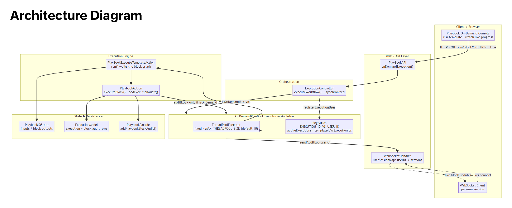
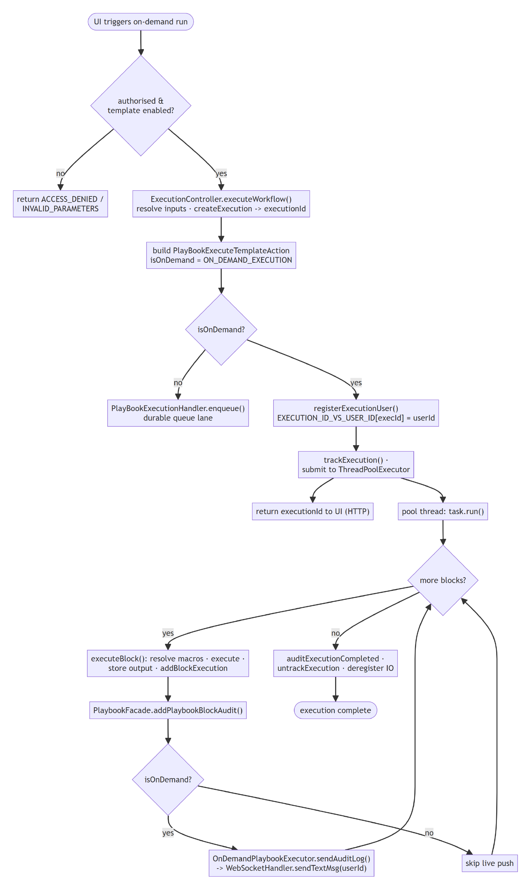

Summary
When a user clicks "Run" on a playbook from the console, the playbook runs immediately and the user watches each step finish live on screen. This is the on-demand flow.
How it works (step by step)
-
User runs it. The UI calls the API (
onDemandExecution) withON_DEMAND_EXECUTION = true. The system first checks the user is allowed and the template is enabled. -
Set up the run.
ExecutionControllerprepares the inputs, creates an execution record (with anexecutionId), and builds the run task — marked as "on-demand." -
Pick the lane. Because it's on-demand, the task goes to the
OnDemandPlaybookExecutor(a dedicated thread pool). Alert/scheduled runs instead go to a durable queue — same engine, different lane. -
Remember who asked. Before running, the executor saves which user started this
execution (
executionId → userId). This is how live updates later find the right browser. - Run it. A pool thread executes the playbook block by block. Each block does its work and saves an audit record.
- Stream progress. After each block, the audit is saved to the database. If the run is on-demand, that same update is also pushed over a WebSocket to the user's screen — so they see progress in real time. (Normal runs just save; they don't push.)
- Finish. When all blocks are done, the run is marked complete and cleaned up.
Key Points
- On-demand runs use their own thread pool, separate from alert/scheduled runs.
- The
executionId → userIdmap is what connects a running playbook to the user's live screen. - Live updates are sent only for on-demand runs, so normal runs do no extra work.
Architecture Diagram
Click the diagram to zoom in / out and pan.

Workflow Diagram
